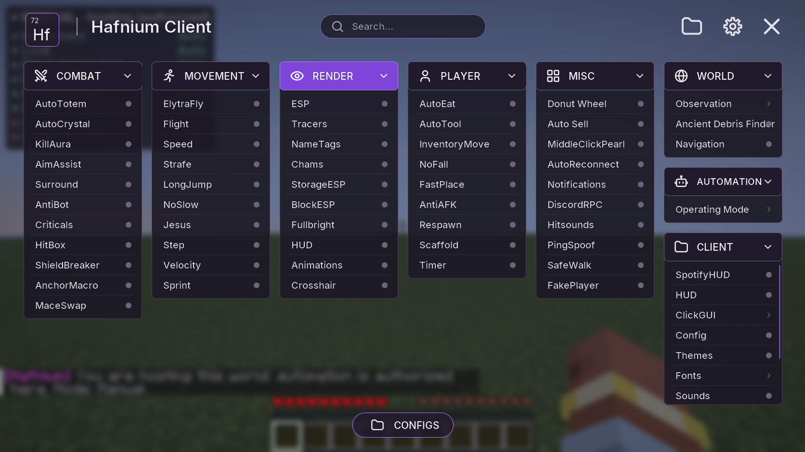

A client that stays out of your way.
Hafnium is a Fabric client with a fast, clean ClickGUI and an automation core built around one rule: it only does what you, and the server, allow.

What's in Hafnium today
Exactly this list. Items marked in development aren't in the current version yet.
Install in three steps
- Install Fabric Loader for Minecraft 1.21.11 and put
Fabric API in your
modsfolder. - Download the Hafnium jar from GitHub Releases and put it in
modstoo. - Start the game and press Right Shift to open the ClickGUI.
Questions
Is it really free?
Yes. Hafnium is free and open source under the GNU GPL v3. You can read, change and share the code; if you share a modified version, its source must stay open too.
What do I need?
Minecraft: Java Edition 1.21.11, Fabric Loader 0.18 or newer and Fabric API. Java 21 comes with the official launcher. SpotifyHUD works on Linux only (it reads Spotify's desktop media session).
Can I use it on servers?
Hafnium works on normal servers without any plugin, but many servers forbid modified clients, X-ray-style tools, macros or automated selling. Hafnium shows what each server allows and keeps autonomous actions off unless you host the world or the server authorizes them, but it doesn't hide itself and can't protect you from a server's rules, anticheat or bans. Check the rules of every server you play on.
Does the Ancient Debris Finder see through walls?
It only marks ancient debris your game has already received from the server. It never guesses or reveals hidden blocks, so on servers with anti-xray it finds little or nothing.
How can I help?
Report bugs and send pull requests on GitHub.
Is this made by Mojang?
No. Hafnium is an independent project and is not affiliated with, approved by or associated with Mojang or Microsoft.